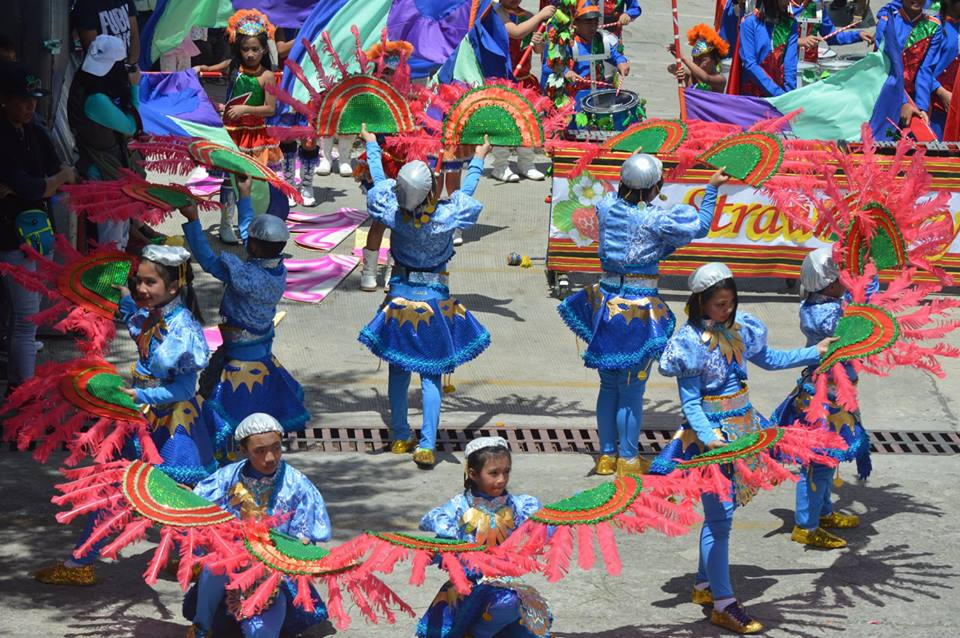

Connect and Grow
TOGETHER
UPCOMING EVENTS

Holy Week: Lucky Summer Visitors
Details

Betag's Youth Center Program
Details
History of Betag
Barangay Betag was once a Sitio of Pico. Betag was a Swampy and marshy area during the Spanish Era. Consequently, Betag was uninhabited not until the area was slowly drained of water when the Spaniards opened up an outlet of the Balili River at Cruz.
Due to population increase, barangay Betag was created sometime in the 1950’s. The name “Betag” basically means a flat land area. It is obviously for this reason that this barangay confining a large part of La Trinidad’s title during the 1980’s as the “Salad bowl of the Philippines” was called “BETAG”.
To this day, Betag no longer carries the vegetables of the so-called Salad Bowl. Instead, it is the barangay that produces most of the strawberries produced in the municipality. Now an eco-tourism area, it carries for itself and the municipality the title of “The Strawberry Fields of the Philippines”.
Aside from this, Barangay Betag is likewise a center of commerce and trade, third to Pico and Balili.